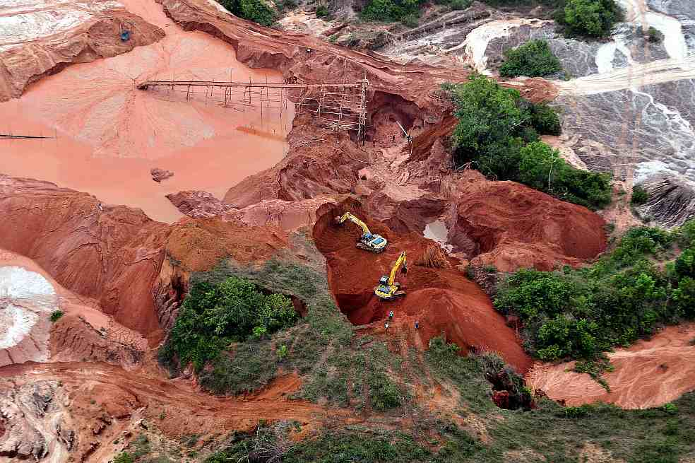

La Minería Ilegal de Oro
Colombia es el segundo país mas megadiverso del mundo , Colombia creó el ministerio de ambiente y desarrrollo sostenible para garantizar la conservacion y el uso sostenible de los recursos naturales. El 27 de septiembre del 2011, se invierten 371 mil millones en 101 proyectos y 180 municipios , hay 35 nuevas estaciones que miden los niveles de los principales rios, y envían la información en vivo tambien cuenta con un monitoreo de desforestación que arroja cifras anuales, tambien la fiscalía general creó la unidad especial para delitos ambientales con su apoyo y el de la policía se desarrollan 16 opérativos de control a la minería criminal en 8 departamentos .
Se incorporan 600 mil hectarías al sistema nacional de areas naturales,tambien se verifica la legalidad de la tierra (los recursos naturales no son algo que hemos heredado de nuesttros padres sino un tesoro que debemos cuidar para nuestros hijos. Cuando los conquistadores españoles llegaron por primera ves a colombia se envarcaron por el rio magdalena en busca de el dorado saqueando pueblos , hoy 500 años mas tarde hay una nueva fiebre de oro miles y miles de minas ilegales han surgido en el rio magdalena, formando regiones con violencia. La mineria ilegal es alimentada por los altos precios de este metal, estas gigantescas minas formadas por mineros que no reciben un buen dinero por el cual trabajan, estas causan un impacto debastador en el medio ambiente, contaminando aguas y destruyendo habitats. La minería no es controlada por el gobierno aunque campañas del ministerio de desarrollo sostenible clausuran las minas ya que aparte de dañar el medio ambiente son financiadas por paramilitares. Aunque estas minas ya no producen tanto oro como en el pasado debido a que se acaba, siguen trabajando para explotar su alto precio, los mineros seguiran su camino arrasando bosques en busca de su pequeño "el dorado".